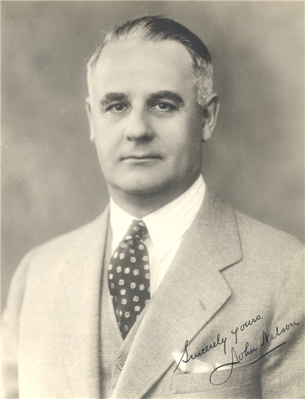

The
Joseph A. Caulder Collection
Past Rotary International Director 1928-29
- Regina, Sask., Canada
"Eyewitness to Rotary International's First 50 Years"
JOSEPH A. CAULDER - An eyewitness to Rotary International's first 50 years.
Album 1 - Pages 55-56: John Nelson, 23rd President
|
Internal Links
|
John Nelson Rotary's 23rd President 
Rotary Biography of John Nelson Montreal, Quebec, Canada. President. Rotary International. 1933-34. (Deceased: 24 January, 1936) John Nelson was born at Paisley, Ontario, Canada, and was educated in the Ontario public schools. He joined the Rotary Club of Vancouver in 1917, was President of that Club in 1923, and became a member of the Rotary Club of Montreal in 1925. He had served Rotary International as President (in 1933-34), Vice-President, Trustee of the Rotary Foundation, District Governor and chairman and member of various committees. Mr. Nelson was managing director of "Victoria Daily Times" from 1902 to 1910, manager of the "Vancouver News Advertiser" from 1910 to 1915, publisher and editor of the "Vancouver World" from 1915 to 1921, contributing editor to "MacLean's Magazine" and free lance contributor to "Blackwoods," "World's Work" and other magazines in 1921-25. He was the author of the book, "The Canadian Provinces; their Policies and Problems," published in 1922. From 1925 until his death, he was supervisor of the public relations department of the Sun Life Assurance Company of Canada, in Montreal. He was delegate to the Imperial Press Conferences in London, England, in 1909 and in Canada in 1921; member of the Institute of Pacific Relations which was held in Honolulu in 1925 and in 1927; Honorary Secretary of the Canadian Institute of International Affairs; Director of the Metropolitan Y.M.C.A., and a member of the Personnel Division of the Canadian National Council of the Y. M. C. A. From Rotary International, 35 East Wacker Drive, Chicago 1, Ill., U.S.A.. March 1954.
Joseph A. Caulder Remembers JOHN NELSON John was President of R. I. in 1933-1934 and passed on January 24th,1936. He was from Montreal when he was President and was a roving ambassador for the Sun Life Assurance Company. John held a lifelong interest in Education and had an important part, along with Charlie Burchell, Leslie Pidgeon and Crawford McCullough, in organizing "The National Council on Education". This organization carried on under the capable leadership of Major Nay until 1941. The raising of about $22,000.00 for this work is perhaps the finest joint effort ever by the Rotary Clubs of Canada. Some of us had known John for many years as a newspaper editor in Vancouver, and prior to that a writer for MacLeans of Toronto. He made regular trips across Canada and when we lived in Moose Jaw and Regina, Saskatchewan, 1906 to 1929, we could figure on at least one visit a year from John, and he was always working on behalf of some very worthy project. He was highly educated and gifted and likeable and as our 3rd R. I. President from Canada, he maintained the high standards set by Leslie and Crawford. It was like John to be joking with his nurse in a hotel room in Chicago when he suddenly passed away. He is not forgotten. J.A.C.
|
| Copyright© Daniel W. Mooers |
Rotary® and Rotary International® are registered trademarks of Rotary International Webmaster: dwm@mooers-law.com |